User’s Hardware Manual_V1.2
Document classification: □ Top secret □ Secret □ Internal information ■ Open
Copyright
The copyright of this manual belongs to Baoding Folinx Embedded Technology Co., Ltd. Without the written permission of our company, no organizations or individuals have the right to copy, distribute, or reproduce any part of this manual in any form, and violators will be held legally responsible.
Forlinx adheres to copyrights of all graphics and texts used in all publications in original or license-free forms.
The drivers and utilities used for the components are subject to the copyrights of the respective manufacturers. The license conditions of the respective manufacturer are to be adhered to. Related license expenses for the operating system and applications should be calculated/declared separately by the related party or its representatives.
Revision History
Date |
Version |
SoM Version |
Carrier Board Version |
Revision History |
|---|---|---|---|---|
03/03/2025 |
V1.0 |
V1.0 |
V1.1 and above |
Initial Version |
21/11/2025 |
V1.1 |
V1.0 |
V1.1 and above |
Adding Section 2.6.2 “SoM Vibration Resistance Design Guide” |
11/12/2025 |
V1.2 |
V1.0 |
V1.1 and above |
Adding Section 3.6.27 “Functional Adapter Board” |
Overview
This manual aims to help you quickly get familiar with the product, understand interface functions and configurations. It covers the interface functions and introductions of the development board, product power consumption, and methods for troubleshooting issues during use. Some commands are annotated in the description for user convenience, with a focus on practicality. For information on pin function multiplexing and hardware design guidelines, please refer to Forlinx’s “OK536x-C Pin Multiplexing Comparison Table” and “OK536x-C Design Guide”.
There are four chapters:
Chapter 1. provides an overall overview of the CPU, briefly introducing its performance and application industries;
Chapter 2. offers a general introduction to the SoM, including descriptions and functions of connector pins;
Chapter 3. introduces the development board in multiple chapters, covering hardware principles and simple design ideas;
Chapter 4. describes the product’s power consumption and other considerations.
Additionally, the manual includes explanations of some symbols and formats.
Format |
Meaning |
|---|---|
Note |
Note or particularly important information must be read carefully. |
📚 |
Relevant explanations regarding the testing section |
️🛤️ |
Related paths. |
1. Allwinner T536 Description
The Allwinner T536 series is a high-performance quad-core Cortex-A55 platform SOC designed for industrial and smart hardware applications. It is suitable for interactive terminals, smart manufacturing, as well as other smart hardware and industrial equipment.
It integrates a quad-core Cortex-A55 CPU and a single-core E907 RISC-V processor. The former features independent L2 cache per core, while the latter offers scalable computing capabilities. Additionally, the T536 includes a Neural Processing Unit (NPU) with a maximum performance of 3 TOPS. It supports multiple heterogeneous expansion modes and various OS architectures, enabling this processor family to meet the demands of diverse application scenarios.
Furthermore, the T536 series supports a combination of RGB/MIPI DSI/LVDS interfaces. It also provides high-speed interfaces for connecting 2× GMAC and a 1× USB3.1 Gen1 & PCIe 2.1 combo. Moreover, the T536 processor includes 4× CAN-FD and 1× Local Bus interfaces, making it well-suited for industrial applications and expansions.
T536 Block Diagram
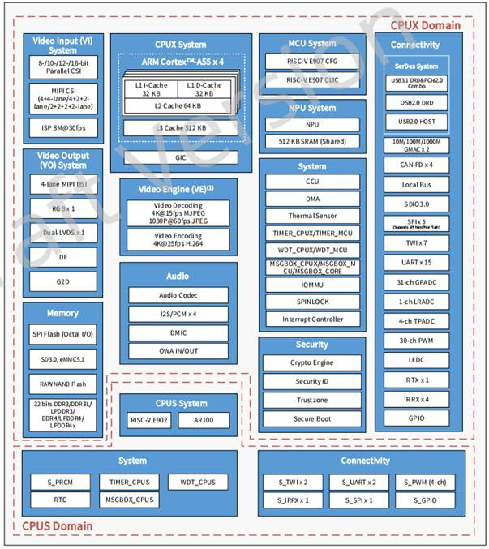
T536 series SoCs.
Features |
T536MX-CEN3 |
T536MX-CEN2 |
T536MX-CEX |
T536MX-CXX |
|---|---|---|---|---|
NPU |
Up to 3 TOPS |
Up to 2 TOPS |
/ |
/ |
ECC Protection |
Support |
Support |
Support |
/ |
Qualification Level |
Industrial |
Industrial |
Industrial |
Industrial |
Package |
FCCSP 533 balls,15mm x 15mm |
FCCSP 533 balls,15mm x 15mm |
FCCSP 533 |
balls,15mm x 15mm |
2. FET536x-C SoM Description
2.1 SoM Appearance Diagram
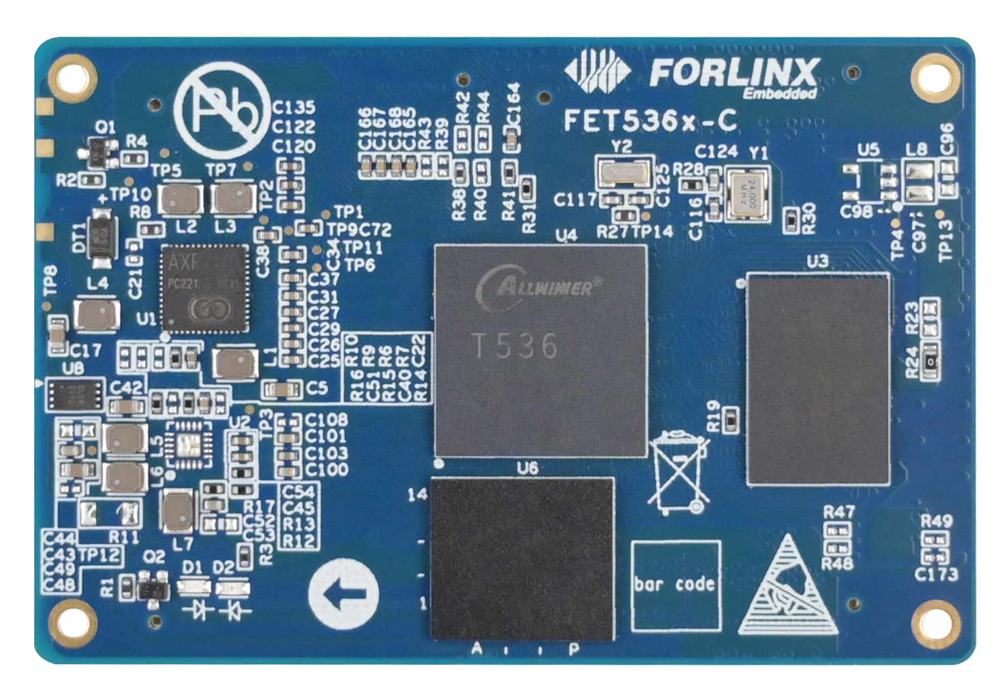
Front
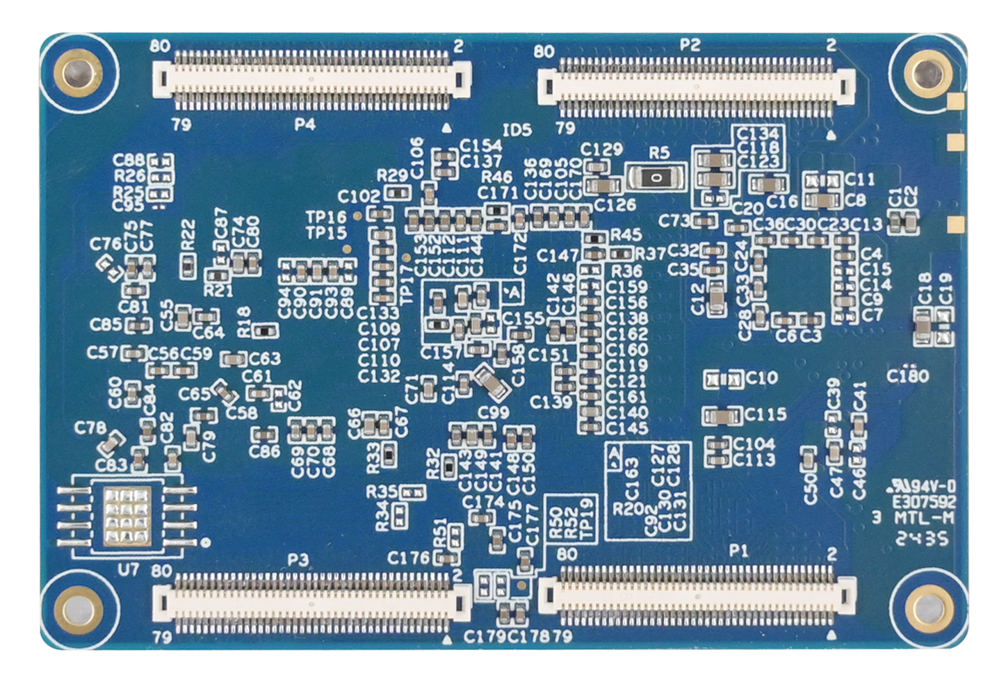
Back
2.2 FET536x SoM Dimension Diagram
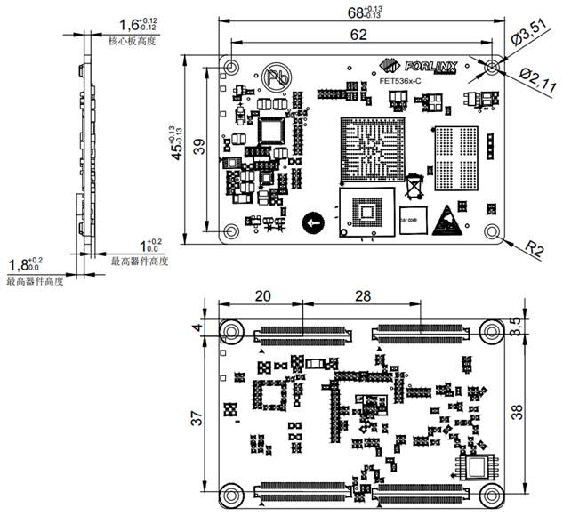
Dimensions: 45mm × 68mm, dimensional tolerance ±0.13mm. For more dimensional details, please refer to the DXF file.
Plate making process: 1.6mm thickness, 10-layer immersion gold PCB.
SoM Connector:
Type: Surface-mounted connector
Pitch: 0.5mm
Pin count: 80P
Gender: Male header, with positioning pillars
Carrier Board Connector:
Type: Surface-mounted connector
Pitch: 0.5mm
Pin count: 80P
Gender: Female socket, with positioning pillars
(Refer to the appendix for connector dimension diagrams.)
Mounting Recommendations:
Use M2 × 2mm threaded inserts for securing the SoM to the carrier board.
Recommended screw specification: M2 × 4mm.
2.3 Performance Parameter
2.3.1 System Frequency
Name |
Specification |
Description |
|||
|---|---|---|---|---|---|
Minimum |
Typical |
Maximum |
Unit |
||
System Frequency |
— |
— |
1.6 |
GHz |
— |
System RTC |
— |
32.768 |
— |
KHz |
— |
2.3.2 Power Parameter
Parameter |
Pin No. |
Specification |
Description |
|||
|---|---|---|---|---|---|---|
Minimum |
Typical |
Maximum |
Unit |
|||
Main Power Supply Voltage |
DCIN |
4.75 |
5 |
5.25 |
V |
— |
No-load current |
— |
212.79 |
mA |
Please refer to the power consumption table in the appendix |
||
Overload current |
— |
583.29 |
mA |
Please refer to the power consumption table in the appendix |
2.3.3 Working Environment
Parameter |
Specification |
Description |
||||
|---|---|---|---|---|---|---|
Minimum |
Typical |
Maximum |
Unit |
|||
Operating Temperature |
Working environment |
-40 |
25 |
+85 |
℃ |
Industrial Level |
Storage Environment |
-40 |
25 |
+125 |
℃ |
||
Humidity |
Working environment |
10 |
— |
90 |
％RH |
No Condensation |
Storage Environment |
5 |
— |
95 |
％RH |
2.3.4 ESD Features
Parameter |
Specification |
Description |
||
|---|---|---|---|---|
Minimum |
Maximum |
Unit |
||
ESD HBM(ESDA/JEDEC JS-001-2017) |
-2000 |
+2000 |
V |
Applicable to all pins of the SoM |
ESD CDM(ESDA/JEDEC JS-002-2018) |
-250 |
+250 |
V |
Applicable to all pins of the SoM |
Note：
The above data is sourced from the chip manual;
All signal led out from the SoM are electrostatic discharge (ESD) sensitive. When designing carrier board, adequate ESD protection measures must be implemented for the interfaces. Additionally, proper ESD precautions should be observed during the transportation, assembly, and usage of the SoM.
2.4 SoM Interfaces
Function |
Quantity |
Parameter |
|---|---|---|
Parallel CSI |
≤1 |
It supports 8/10/12/16-bit widths, ITU-R BT.656 up to 4_720P@30fps, and ITU-R BT.1120 up to 4_1080P@30fps. |
MIPI CSI |
≤4 |
8M@30fps RAW12 2F-WDR, up to 3264(H) x 2448(V), supporting 4+4-lane, 4+2+2-lane, or 2+2+2+2-lane |
MIPI DSI(1) |
≤1 |
Supports 4-lane MIPI DSI，1920x1200@60fps |
RGB LCD(1) |
≤1 |
DE/SYNC mode，1920x1200@60fps |
LVDS(1) |
≤2 |
Supports dual link 1920 x 1080@60fps，single link 1366 x 768@60fps； |
SDIO |
≤2 |
SMHC0 for SD, SMHC1 for SDIO interface, 1.8 V mode only |
Audio |
≤1 |
Built-in audio codec supports 1 x differential LINEOUT output |
I2S |
≤4 |
Supports master/slave mode with sampling rate from 8kHz to 384kHz |
DMIC |
≤1 |
Supports 8-channel with sampling rate from 8kHz to 48kHz |
OWA IN/OUT |
≤1 |
Single line audio |
USB3.1(2) |
≤1 |
USB3.1 OTG，5Gbps |
PCIe2.1(2) |
≤1 |
Supports RC and EP，1-lane，5Gbps |
USB2.0 DRD |
1 |
Supports master and slave and High-Speed，480Mbps |
USB2.0 HOST |
1 |
Only supports master mode, and High-Speed, 480Mbps |
GMAC |
≤2 |
Support RMII/RGMII interface and rate 10/100/1000 Mbit/s |
CAN-FD |
≤4 |
Supports CAN-FD and CAN2.0B |
Local Bus |
≤1 |
Supports 8/16/32 bit width, up to 100MHz bus clock |
SPI |
≤5 |
Supports master/slave mode, up to 100MHz clock |
TWI(3) |
≤8 |
Compatible with I2C standard, standard mode 100 kbit/s, fast mode 400 kbit/s |
UART(4) |
≤17 |
Compatible with industry standard 16450/16550. |
GPADC |
≤28 |
12-bit sampling resolution and 10-bit accuracy, maximum sampling rate 2MHz |
LRADC |
1 |
6-bit sampling resolution, 2KHz sampling rate, used for key detection |
TPADC |
≤1 |
4-wire resistive touch, 12 bit SAR type AD conversion |
PWM |
≤34 |
Output frequency 024MHz or 0100MHz |
LEDC |
≤1 |
Control LED light, programmable output high and low width, data up to 800kbit/s |
IR TX |
≤1 |
Infrared output |
IR RX |
≤5 |
Infrared receiving |
GPIO |
≤196 |
Note:
The parameters in the table are the theoretical values of hardware design or CPU;
RGB, LVDS, MIPI-DSI have a pin multiplexing relationship, please read the chip data sheet or pin multiplexing table;
The USB3.1 and PCIe interfaces are multiplexed and can only be used in an either-or configuration；
S-TWI0 is occupied by the SoM and cannot be used on the carrier board;
UART0 is designated as the debugging serial port, and it is recommended to be retained in the design.
2.5 FET536x SoM Pin Definition
2.5.1 FET536x SoM Pin Schematic
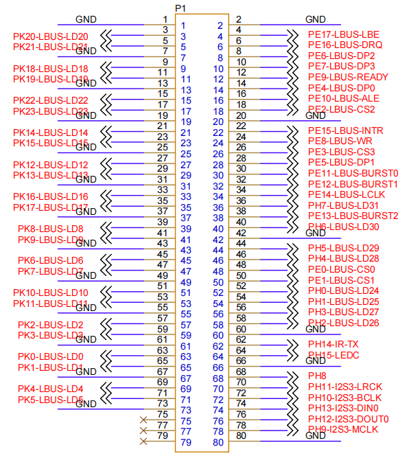
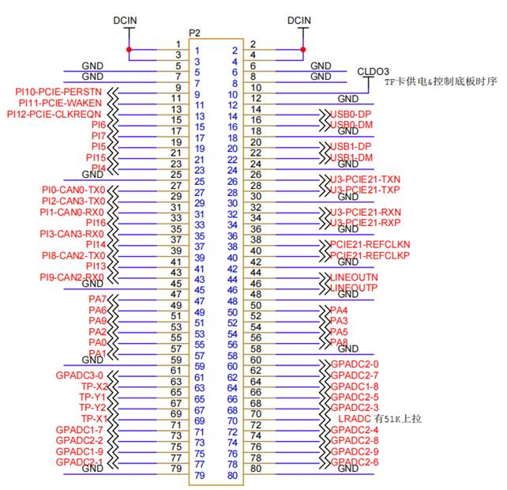
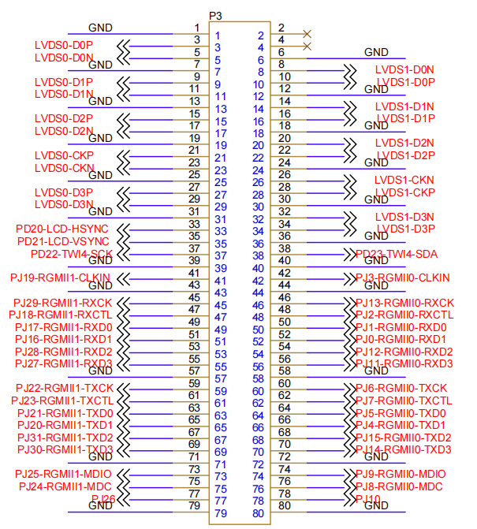
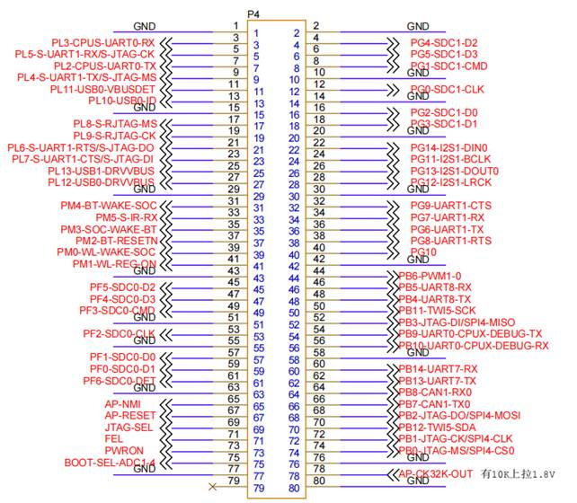
2.5.2 FET536x SoM Pin Function Description
For various functional expansion requirements, please refer to the user document “FET536x-C Pin Multiplexing Table”. However, for more detailed information, it is recommended that you consult the relevant documentation, the chip datasheet, and the reference manual.
2.6 SoM Hardware Design Description
2.6.1 SoM Circuit Design Guide
Power Pin
Function |
Signal Name |
I/O |
Default Function |
Pin Number |
|---|---|---|---|---|
Power supply |
DCIN |
Power Input |
Power Supply for SoM: Voltage: 5V |
P2_1,P2_2,P2_3,P2_4 |
CLDO3 |
Power output |
It is only used to control the power-on sequence of the carrier board and to power |
P2_10 |
|
GND |
Ground |
Power ground and signal ground on the SoM. All GND pins must be connected. |
System Control Pin
Function |
Signal Name |
I/O |
Default Function |
Pin Number |
|---|---|---|---|---|
CPU reset |
AP-RESET |
I |
System reset signal input for the SoM, active low. Do not add any resistors or capacitors to this pin, as doing so may prevent the SoM from starting up properly. |
P4_67 |
Flashing |
FEL |
I |
Enter USB OTG forced download mode, active-low. |
P4_71 |
On/Off |
PWRON |
I |
Active-low. Press and hold to power off; press and hold to power on. |
P4_73 |
JTAG |
JTAG-SEL |
I |
Default high level. This signal is used to select the JTAG function output port. |
P4_69 |
CPU Interrupt |
AP-NMI |
I |
Interrupt input. Not used by the carrier board by default. |
P4_65 |
BOOT option |
BOOT-SEL-ADC1-4 |
I |
Refer to the carrier board design circuit. |
P4_75 |
The FET536x-C SoM integrates the power supply, reset monitoring circuit, and storage circuit into a compact module, requiring a very simple external circuit. To form a minimum system, it only needs a 5V power supply, a reset button, and boot configuration to operate, as shown in the figure below:
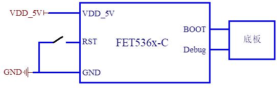
Refer to “Appendix IV. Minimum System Diagram” However, in general, it is recommended to connect some external devices, such as a debug serial port, in addition to the minimum system. Otherwise, the you cannot determine whether the system has started. After completing these steps, you can then add the required functions based on the SoM’s default interface definition provided by Forlinx.
For the design of the SoM’s peripheral circuits, please refer to Section 3.5, “OK536x-C Carrier Board Description”.
2.6.2 SoM Anti-Vibration Design Guide
It uses M2 pre-applied nylon (NYLOK) screws to fix the SoM through the pre-drilled mounting holes at its four corners. The fastening torque should be controlled at 0.15 N·m. The specific assembly diagram is as follows:
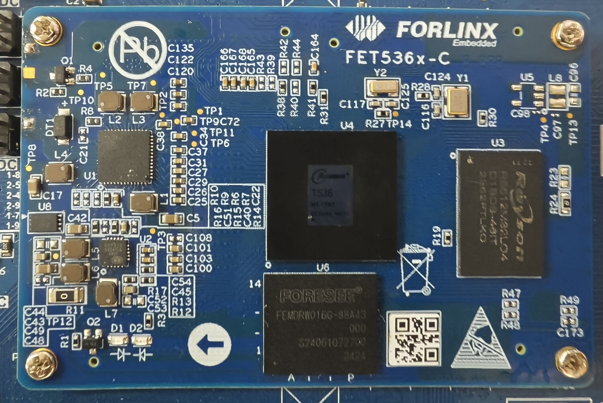
This design has been validated by vibration tests specified in the GB/T 2423.10-2008 / IEC 60068-2-6:1995 standards, achieving the following levels: Frequency range: 10 Hz ~ 150 Hz
Test axes: X, Y, Z axes
Displacement amplitude: 0.35 mm
Acceleration amplitude: 5 g
The performance data listed in this manual are derived from tests conducted in a standard laboratory environment and are applicable to general industrial equipment. Performance in actual applications may vary due to factors such as installation methods and combined stresses.
3. OK536x-C Embedded Development Description
3.1 OK536x Development Board Interface Diagram
Connection method: Board-to-board. The main interfaces are shown in the figure below:
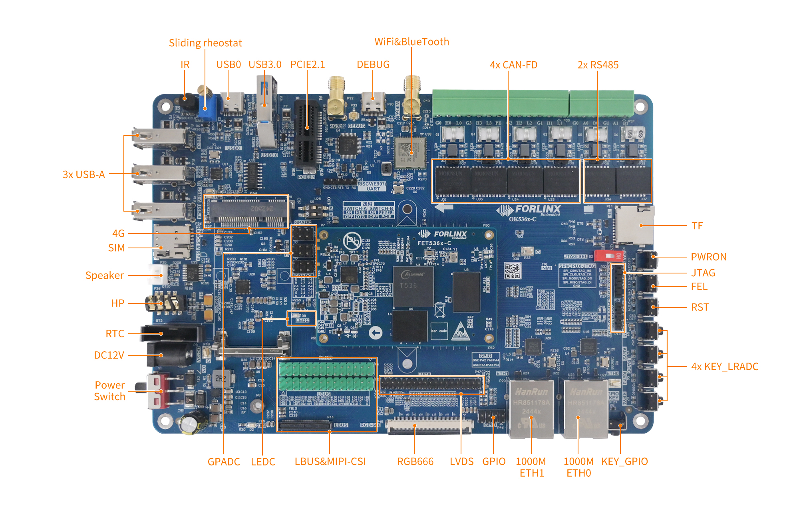
3.2 OK536x Development Board Dimension Diagram
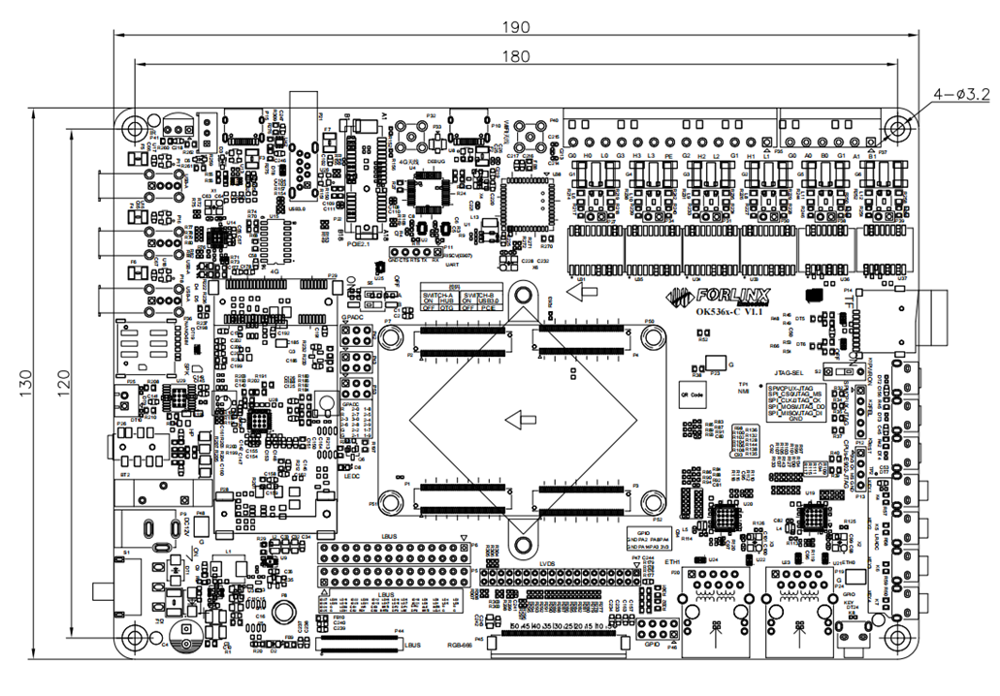
PCB: 130mm×190mm
Mounting hole dimensions: Pitch: 120mm × 180mm, hole diameter: 3mm.
Plate making process: 1.6mm thickness, 4-layer PCB.
Power Voltage: DC 12V
3.3 Heatsink Dimensions
There are two mounting holes on the carrier board with a diameter of 3.2mm for a heatsink. You can optionally install a heatsink according to the on-site environment. Please add a layer of insulating thermal conductive silicone pad between the heatsink and the SoM contact surface. Recommended heatsink: 39mm × 39mm × 23mm. See below for details.
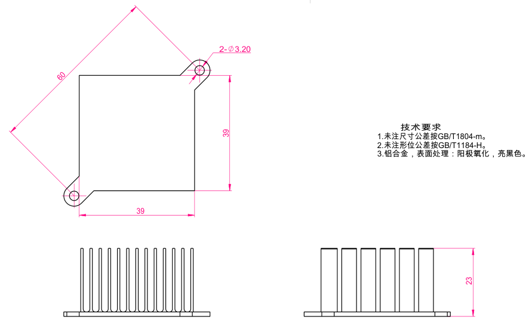
3.4 Naming Rules
ABC-D+IK:M
Field |
Field Description |
Value |
Description |
|---|---|---|---|
A |
Grade |
PC |
Prototype Sample |
Blank |
Mass Production |
||
B |
Product Line Identification |
OK |
Forlinx Embedded development board |
C |
CPU Name |
536x |
T536 |
- |
Segment Identification |
- |
|
D |
Connection |
Cx |
Board to board connector |
+ |
Segment Identification |
+ |
The configuration parameter section follows this identifier. |
I |
Running temperature |
C |
0 to 70℃ Commercial-grade |
I |
-40 to 85℃ Industrial-grade |
||
K |
PCB Version |
11 |
V1.1 |
xx |
Vx.x |
||
:M |
Internal Identification of the Manufacturer |
:X |
This is the internal identification of the manufacturer and has no impact on the use. |
3.5 Carrier Board Interfaces
Function |
Quantity |
Parameter |
|---|---|---|
LCD(1) |
1 |
RGB666 (18-bit) – The SoM can support up to RGB888 (24-bit) and a maximum resolution of 1080p@60fps. |
LVDS (1) |
1 |
Dual Octal, up to 1080p@60fps |
MIPI-DSI(1) |
1 |
LVDS to MIPI, supports 4lane, up to 1080p @ 60fps; |
Ethernet |
2 |
10/100/1000Mbps adaptive, RJ-45 interface |
TYPE-C （DEBUG） |
1 |
Converts the debug UART to USB interface for debugging CPUS, CPUX, and RISC-V separately. |
TYPE-C （USB0） (2) |
1 |
Native USB0 interface with OTG support. It is multiplexed with the USB hub; only one can be used at a time. |
USB Host (2) |
3 |
Expanded via a hub, USB 2.0 (up to 480 Mbps) is multiplexed with the native USB0 interface. Only one of them can be used at a time. |
USB3.0(3) |
1 |
Connected via a standard USB 3.0-A connector. Pins are multiplexed with PCIE; only one interface can be used at a time. |
PCIE2.1(3) |
1 |
Connected via a standard PCIE X1 connector. Pins are multiplexed with USB 3.0; only one interface can be used at a time. |
TF |
1 |
Supports SD3.0 protocol. |
MIPI CSI |
3 |
Multiplexed with the Local Bus. Requires an external FIT-CAM_E function module board, which includes one 4lane MCSI and two 2lane MCSI interfaces. |
WiFi&BlueTooth |
1 |
Onboard AW-CM358SM, 2.4G/5G dual-band Wi-Fi, BT5.0, and audio capabilities. Wi-Fi function occupies one SDIO interface; BT function occupies one UART interface; audio occupies one I2S interface.o. |
PWM |
1 |
Connected for LCD backlight adjustment. |
GPADC |
14 |
1.8V, slide resistor on carrier board for easy testing. |
RTC |
1 |
On-board CR2032 battery, keep going when power is off |
Audio |
2 |
1 x 4-pole headphone jack with built-in HP (headphone) and MIC (microphone); one mono SPEAKER interface. |
KEY |
8 |
Includes reset, download/flash, power on/off, GPIO buttons, and LRADC buttons x4. |
CAN-FD |
4 |
CAN-FD with protection circuit |
485 |
2 |
It is equipped with automatic transmission and receiving control and protection circuit. |
IR |
1 |
IR_RX, sample rate 1MHz, 64*8bits cache |
Local Bus |
1 |
Routed through a 90-pin connector; 8/16/32-bit data width transmission; synchronous read/write 128×8 FIFO; also accessible via 2.54mm pin headers. Multiplexed with MIPI-CSI; only one interface can be used at a time. |
4G (2) |
1 |
Expanded via a USB 2.0 hub; this hub is multiplexed with USB0. |
GPIO |
5 |
Led out via pin |
LEDC |
1 |
Independent and controllable lighting |
SPI/CPUX-JTAG |
1 |
Led out via 2.54mm pin |
CPUs-E902-JTAG |
1 |
Led out via 2.54mm pin |
RISC-V (E907) UART |
1 |
Led out via 2.54mm pin |
Note:
The parameters in the table are the theoretical values of hardware design or CPU;
LCD, MIPI-DSI and LVDS have interface multiplexing, and only one of the three can be used at a time;
Among them, TYPE-C (USB0) and the USB hub are multiplexed, and a toggle switch must be used to select one of the two;
USB3.0 and PCIE2.1 are multiplexed, and a toggle switch must be used to select one of the two.
3.6 OK536x-C Carrier Board Description
**Note: **
The component UID with “_DNP” mark in the diagram below represents it is not soldered by
default;The schematic diagrams in this manual are only for interface descriptions. Please refer to the source file materials for hardware design.
3.6.1 Carrier Board Power
As shown in the figure, the 12V adapter supplies power to the development board through the power connector P9. Among them, VDD_5V powers the SoM. After the SoM is powered on, it outputs VDD33 to enable U5 and U9 on the carrier board.
VDD33 ensures that the SoM powers on first, followed by the carrier board, to prevent latch-up effects that could damage the CPU.
Note: For custom designs, follow this power sequence: SoM VDD33 enables carrier board DC-DC, ensuring SoM powers on before carrier board.
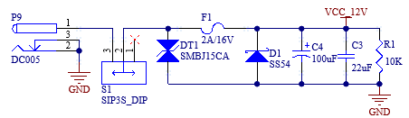
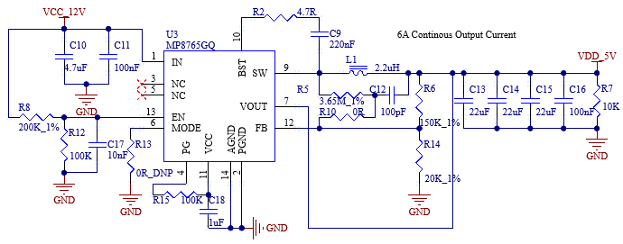
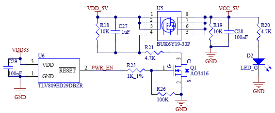
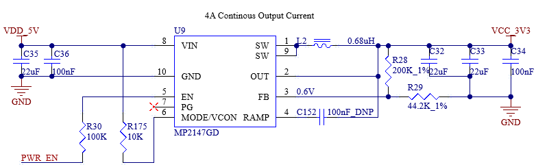
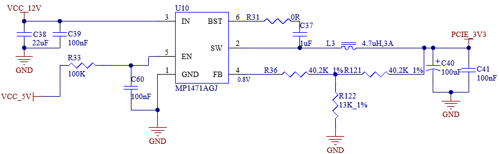
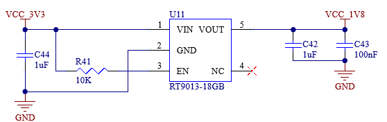
3.6.2 BOOT
OK536x-C boot sequence: SMHC0 → EMMC_BOOT → EMMC_USER → try (except SPI2)
A 10K pull-up resistor pulled up to 1.8V is implemented on the SoM, and R38=3.9K_1% is populated on the carrier board to achieve the boot sequence described above.
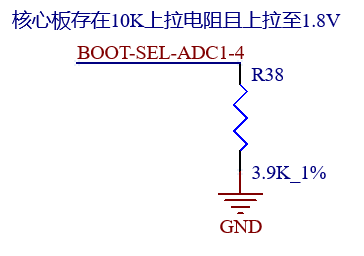
Note: SMHC0 boots before EMMC. When booting with a card inserted (non-flashing mode), ensure the TF card has no BOOT partition. Create a bootable TF card image instead. See Software User Manual.
3.6.4 Debugging Serial Port
SoM debug serial ports:
UART0-CPUX-DEBUG-TX: CPUX debug
CPUS-UART0: CPUS debug
S-UART1: RISC-V debug
For user convenience, CPUX, CPUS, and RISC-V debug ports are integrated into a USB Type-C interface via XR21V1414IM48 USB-to-serial chip. S-UART0 is routed to a 3P 2.54mm header.
To use debug serial ports:
Install XR21V1414IM48 driver on PC.
Connect P10 to PC USB port using a USB to Type-C cable.
Open a terminal tool (e.g., Putty) with settings: 115200 baud, 8 data bits, no parity, 1 stop bit.
Select the correct COM port and power on the board. Debug messages will appear.
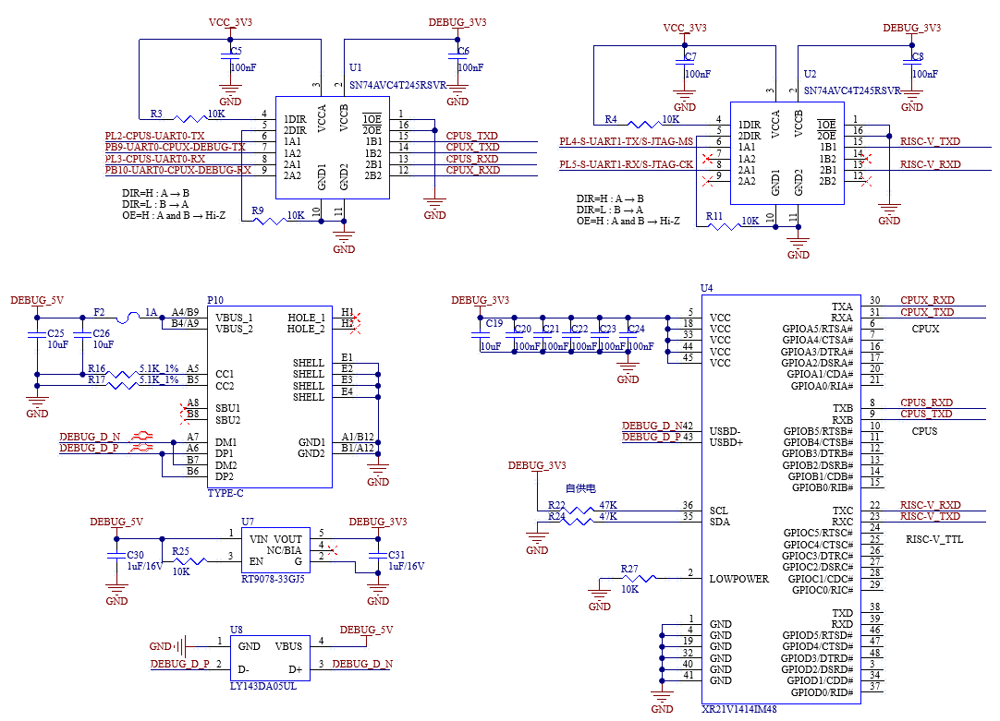
Note:
For future debugging convenience, route out these debug ports on custom carrier boards;
The debugging serial port on the carrier board has an anti-leakage design. This is to prevent operational anomalies caused by factors such as level mismatch of the serial cable or leakage current. Please refer to this design in your own implementations;
All three debugging serial ports are not recommended for use as general-purpose communication ports or for other functions.
3.6.5 JTAG Interface
The CPUX-JTAG and CPUS-E902-JTAG interfaces are led out from the development board via 2.54mm pitch headers, allowing individual emulation and debugging of the two cores using an emulator. Additionally, the RISCV(E907)_UART interface is provided via a 2.54mm pitch header.
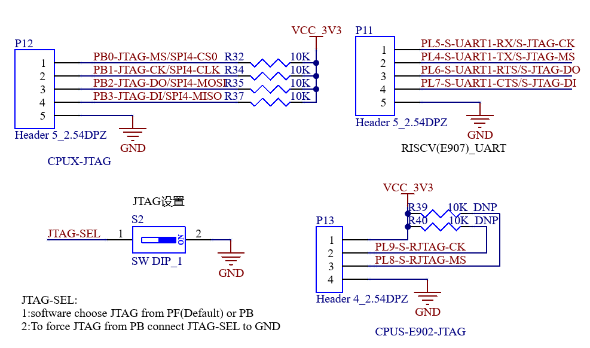
Note: The JTAG-SEL switch (S2) must remain in its default OFF position.
3.6.6 TF Card
The TF card interface on the development board is connected to the CPU’s SDC0 channel. Power for the TF card is supplied by the VDD33 output from the SoM.
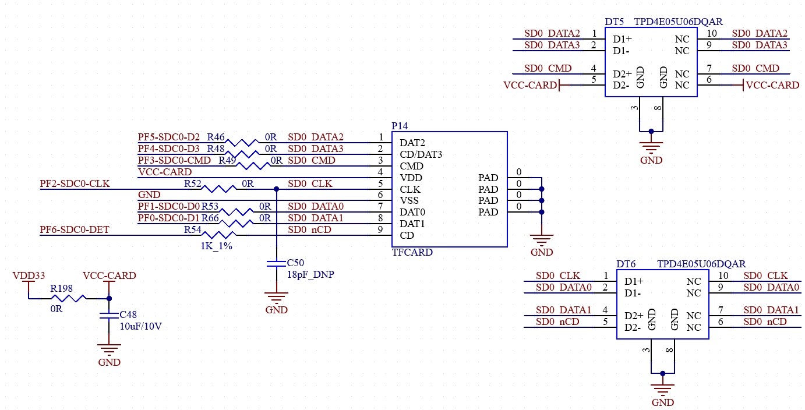
Notes:
The TF card is a hot-pluggable device. ESD protection measures should be taken;
The SDC0-CMD and SDC0-DET signals are pulled up internally within the SoC;
Length matching is required for the SD (data) signal traces.
3.6.7 RTC
An RTC device is connected to the carrier board via the TWI5 bus. The circuit uses D7 to enable compatible power supply from either VCC_3V3 or a button cell battery. This ensures the RTC chip remains powered by the battery after the carrier board power is cut off. The RX8010SJ chip is used in the default design. Button battery: CR2032.
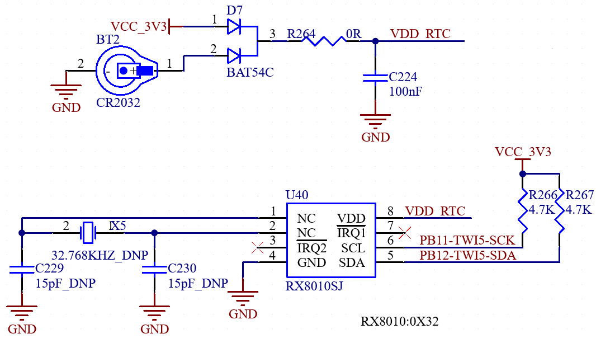
3.6.9 GPADC
The GPADC interface is led out via three 2.54mm pitch, 2*3P headers, accompanied by slide potentiometers for direct connection via DuPont wires. The board offers a total of 14 x GPADC with a maximum sampling voltage of 1.8V.
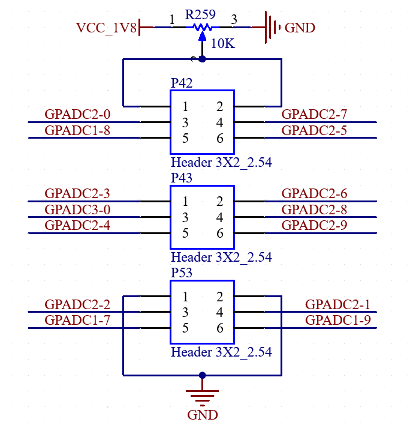
3.6.10 IR Interface
The IR interface is connected to an HS0038B infrared receiver. Please send infrared signals to this receiver using a remote control. The received IR information will be displayed in the debugging serial port.
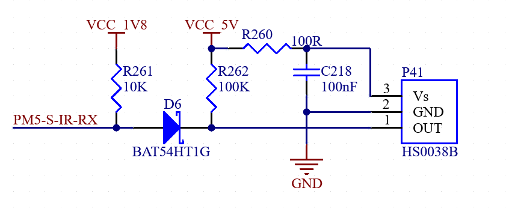
3.6.11 Type-C Interface
The Type-C interface on the carrier board is connected to the USB0 interface of the SoM. This interface supports OTG functionality, allowing it to be used for USB programming when connected to a PC, or for connecting storage devices such as USB flash drives.
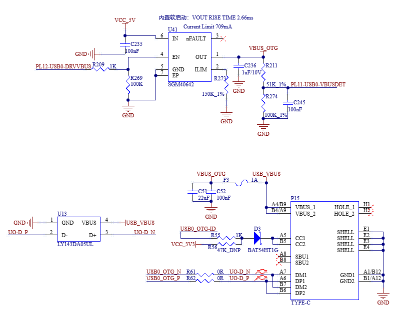
3.6.12 USB2.0 HUB
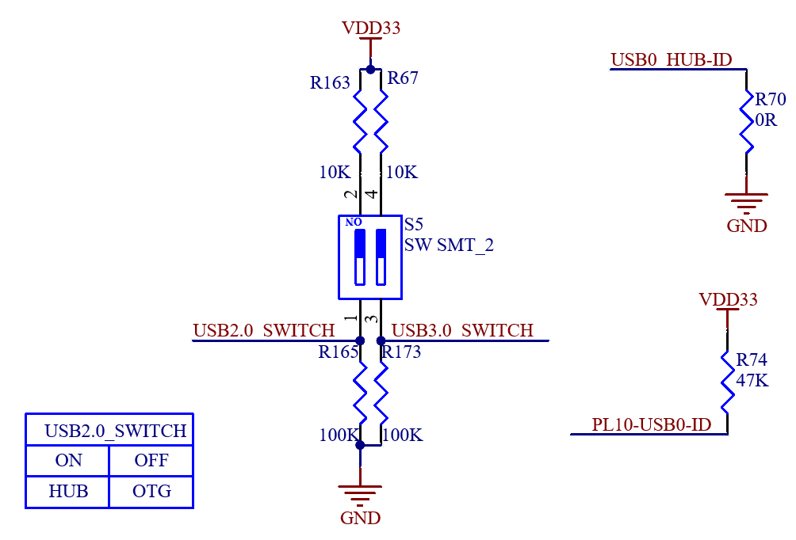
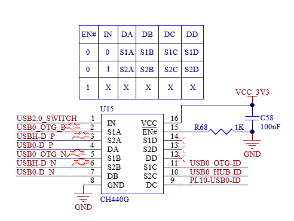
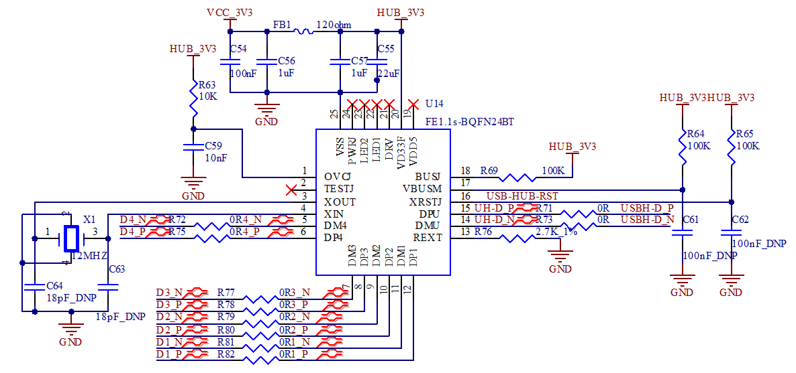
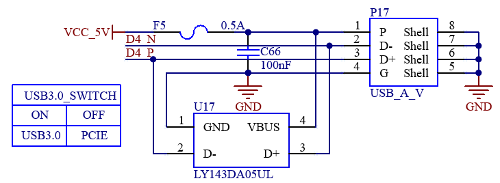
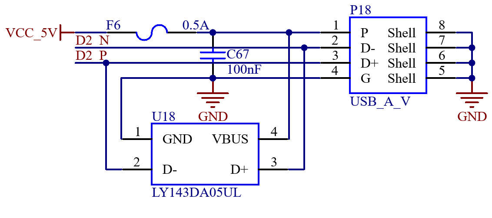
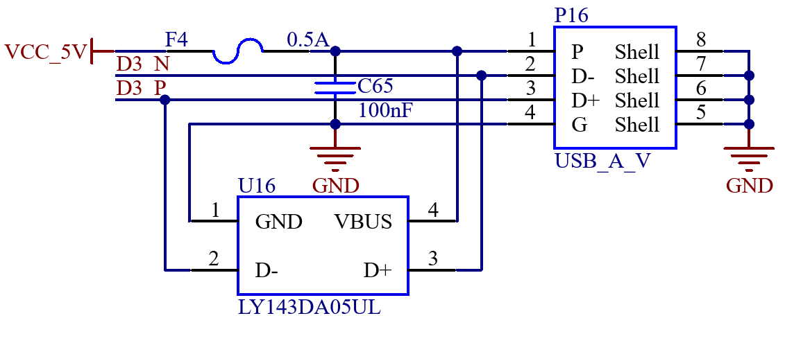
The OK536x-C development board features an onboard USB 2.0 hub. It uses a CH440G analog switch chip and a DIP switch to multiplex the USB0 signal. When the IN pin of the CH440G is set low (0), the Type-C interface is selected.
When the IN pin is set high (1), the USB 2.0 HUB is selected. This hub provides four downstream USB host ports: three are connected to standard USB 2.0 Type-A connectors on the board, and one is connected to a mini-PCIE interface. The mini-PCIE interface can be used to connect a 4G module (e.g., EC20) for 4G internet access, while the other ports can connect standard USB devices.
Note: Use the SWITCH-A DIP switch to control the multiplexing of the USB0 signal between the USB-HUB and the Type-C interface.
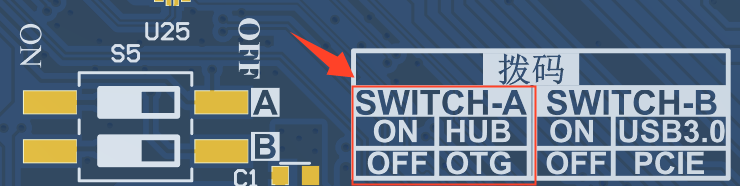
3.6.13 WiFi&BT
The OK536x-C development board incorporates an onboard AW-CM358SM WiFi & Bluetooth combo module. WiFi uses the SDIO interface, supports dual-band (2.4GHz & 5GHz), and complies with IEEE 802.11 a/b/g/n/ac standards. Bluetooth uses the UART & PCM interfaces and complies with the Bluetooth 5.0 standard.
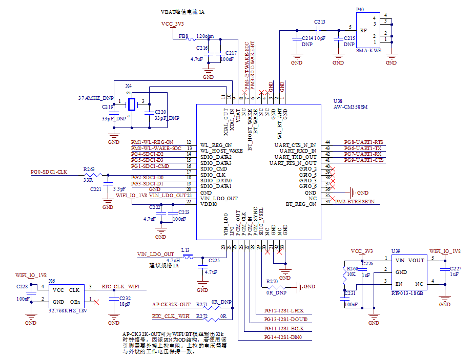
Note: The AP-CK32K-OUT pin can output a 32K clock signal for the WiFi/BT module. As this pin has an open-drain (OD) structure, an external pull-up resistor is required if this feature is used. The pull-up voltage must match the operating voltage of the peripheral device.
3.6.14 4G
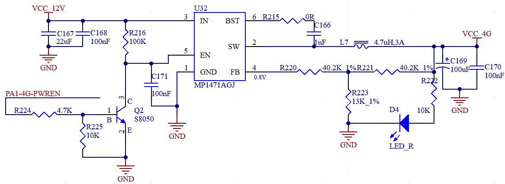
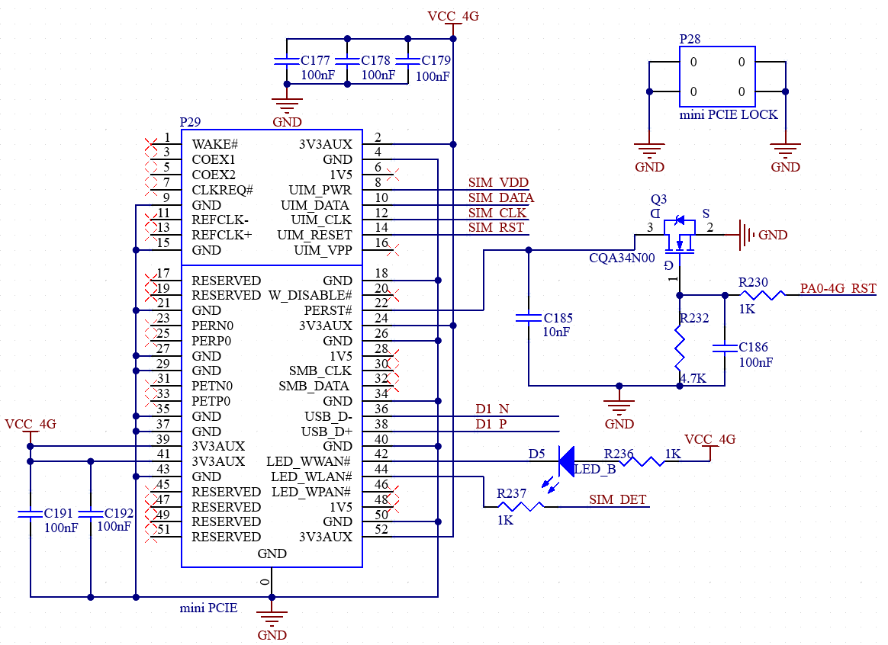
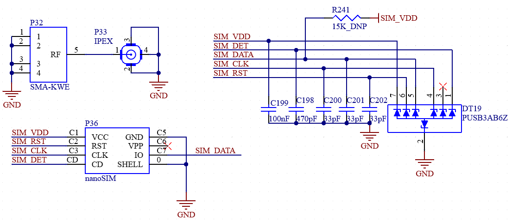
The OK536x-C development board features an onboard mini-PCIE interface designed for connecting a 4G module (e.g., EC20). This interface has independently controllable power and an onboard SIM card slot.
Note:
Ensure the 4G module is installed and secured with the latch before powering on the development board;
The SIM card slot is for Nano-SIM cards. Insert the card with the chip contacts facing down and the notch facing inward.
3.6.15 USB3.0&PCIE
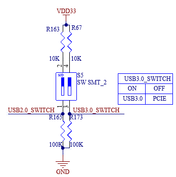
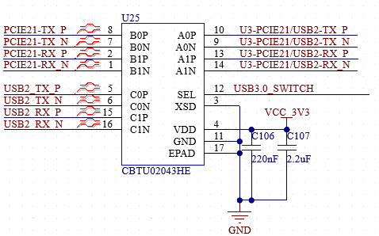
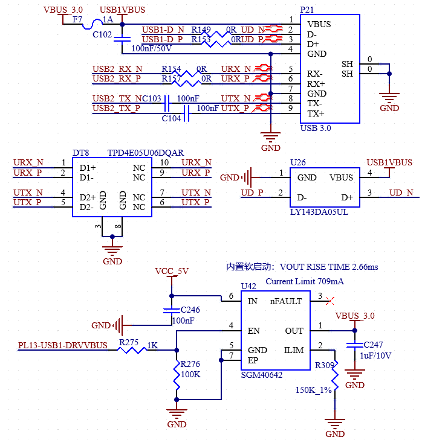
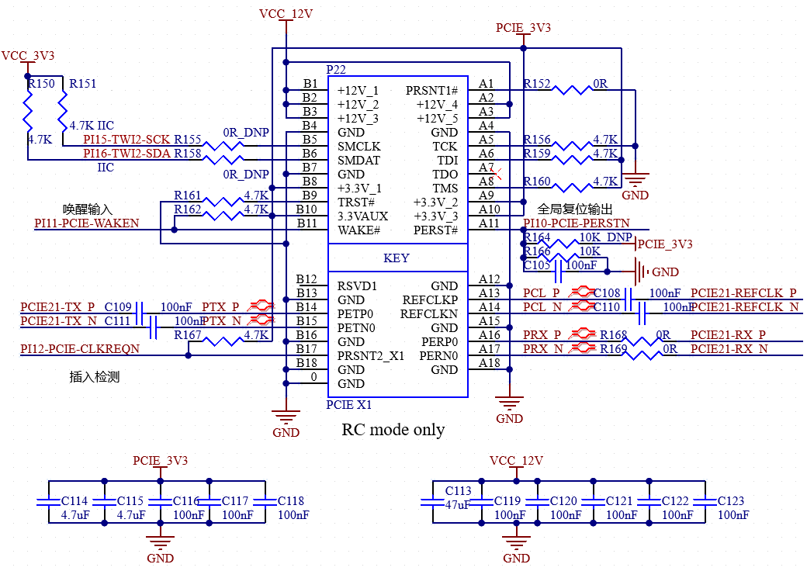
The OK536x-C SoM natively supports both USB 3.0 and PCIe 2.1, but they share the same set of pins through multiplexing. The development board uses a high-speed analog switch chip and a DIP switch to route these pins to different external interfaces:
When configured for USB 3.0, the signals are routed to a standard USB 3.0 Type-A connector. The board can only act as a Host and connect to standard USB 3.0 devices.
When configured for PCIe 2.1, the signals are routed to a standard PCIe x1 connector, which can only connect to compatible PCIe x1 edge-card devices.
Note: Use the switch-B DIP switch to select between the USB 3.0 and PCIe 2.1 functions.
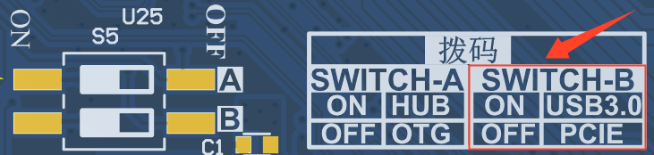
3.6.16 RGMII
The OK536x-C development board supports two native 1000M/100M/10M auto-negotiating Ethernet ports. These are implemented using the two RGMII interfaces from the SoM in conjunction with YT8521SH PHY chips, and are led out via standard RJ45 connectors with integrated magnetics. They can be used to connect network devices for LAN or WAN communication.
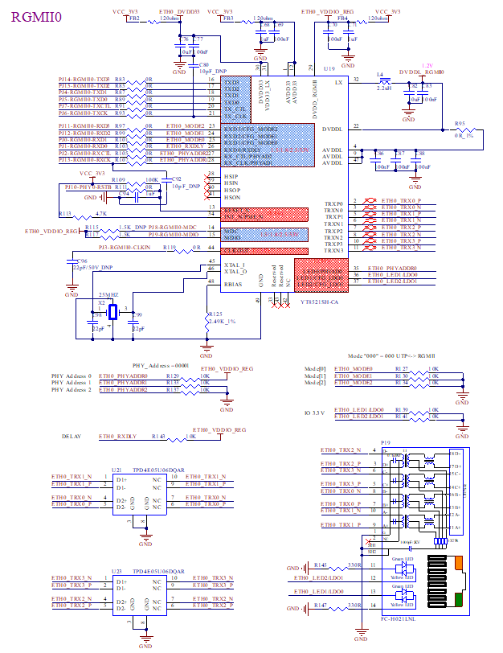
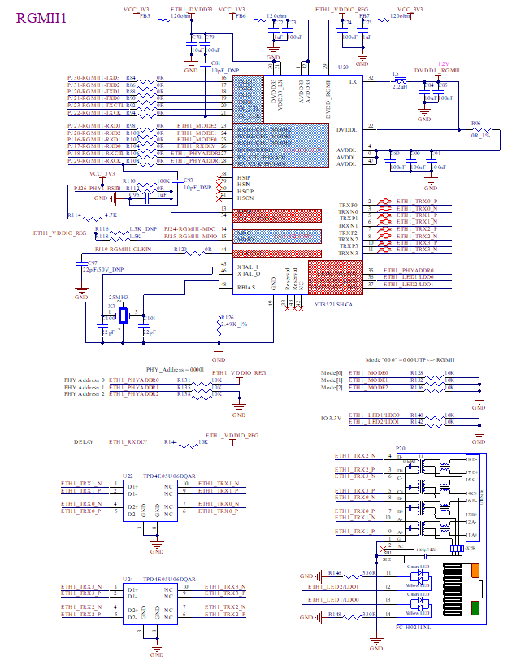
3.6.17 AUDIO
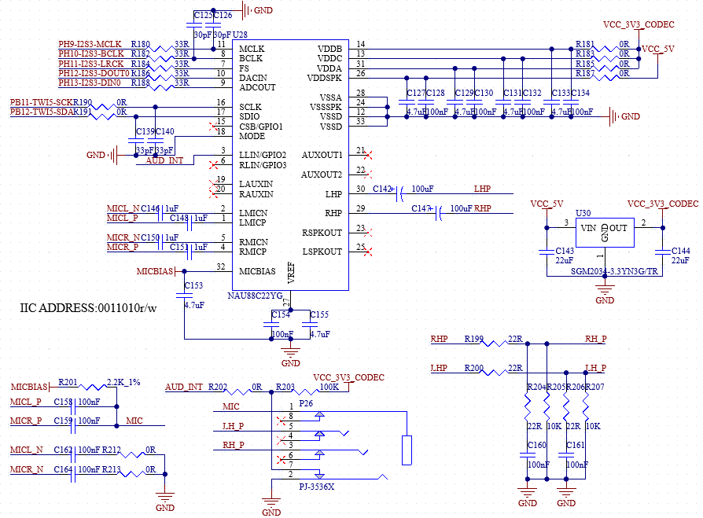
There is an onboard NAU88C22YG audio codec chip on the development board. A standard 3.5mm audio jack provides stereo headphone output and microphone input functionality.
3.6.18 LINEOUT Interface
The OK536x-C development board utilizes the native differential LINEOUT signals. An external speaker interface is provided via the TPA6017A2PWP audio amplifier chip, designed to drive a 3Ω/2W speaker.
3.6.19 CAN-FD
The OK536x-C development board uses the native CAN-FD controller coupled with TDH541S CANFD isolated transceivers to provide four CAN interfaces. These interfaces feature isolation protection, suitable for most application scenarios.
3.6.20 485
The OK536x-C development board uses a native UART coupled with TDH341S485S isolated transceivers to provide two standard RS-485 interfaces. These interfaces support automatic direction control and feature isolation protection, suitable for most application scenarios.
3.6.21 LEDC
There is a user-configurable LED indicator on the development board. Different lighting effects can be achieved by programming the dedicated LEDC control pins.
3.6.22 GPIO
GPIO signals are led out via a 2.54mm pitch, 2*4 header, allowing for direct connection via DuPont wires.
3.6.23 KEY
There is a user-configurable key on the development board. Different functions can be realized by controlling this GPIO pin.
3.6.24 LVDS Interface
The LVDS signals are led out from the development board via a 2.0mm pitch, 2*19P header. This signal group is multiplexed with the MIPI and LCD signals. This interface can be used to connect Forlinx’s standard 10.1-inch LVDS display. Furthermore, Forlinx’s standard 7-inch MIPI display can be connected using an LVDS-to-MIPI adapter board.
3.6.25 LCD-RGB666 Interface
The LCD signals are led out from the development board via a 0.5mm pitch, 54P FPC connector. This signal group is multiplexed with the LVDS signals. Resistive touch signals are directly connected to the SoC. This interface can be used to connect Forlinx’s standard 7-inch LCD display (supporting resistive or capacitive touch).
3.6.26 Local Bus
The OK536x-C development board uses a 0.4mm-pitch 90PIN connector to bring out LBUS-related signals, allowing direct connection to Allwinner’s FPGA demo daughterboard. Additionally, Local Bus signals are accessible via two 2.54mm-pitch 2x14 pin headers. Since MIPI-CSI signals are multiplexed with Local Bus signals, the FIT-CAM_E V1.1 module board can be connected to enable MIPI-CSI functionality. This module supports two 2-lane cameras (OV5645) and one 4-lane camera (OV13855).
3.6.27 Function Adapter Board
Due to function multiplexing and size constraints of the carrier board, certain features such as MIPI-CSI and MIPI-DSI require dedicated adapter boards: the camera adapter board (FIT-CAM_E V1.1) and the LVDS-to-MIPI-DSI adapter board (FIT-LMIPI-II V1.1).
3.6.27.1 FIT-CAM_E V1.1
This adapter board connects via the P44 connector (0.4mm-pitch 90pin) on the carrier board. It supports one 4-lane camera and two 2-lane cameras. This adapter board obtains 5V and 3.3V power through the P44 connector on the carrier board, and provides a clock signal to the external camera via an active crystal oscillator.
3.6.27.2 FIT-LMIPI-II V1.1
Due to multiplexing among LVDS, MIPI-DSI, and LCD signals, the FIT-LMIPI-II V1.1 adapter board can be used to connect these signals to LVDS interface pins, enabling MIPI-DSI conversion for connecting MIPI displays.
4. Connector Specification Diagram
SoM connector: surface-mount, 0.5mm pitch, 80P, male, 1.23mm height, with locating posts.
Carrier board connector: surface-mount, 0.5mm pitch, 80P, female socket, 1.85mm height, with locating posts.
Local Bus carrier board connector: model DF40HC(3.0)-90DS-0.4V(58).
Local Bus daughterboard connector: model DF40C-90DP-0.4V(58).
5. OK536x-C Development Board Linux Consumption Table
No. |
Item |
SoM Power (W) |
Development Board Power (including SoM) |
|---|---|---|---|
1 |
No-load startup peak power |
2.34W |
3.88W |
2 |
No-load standby power |
1.07W |
2.59W |
3 |
Sleep mode |
0.61W |
1.80W |
4 |
CPU + Memory + eMMC stress test |
2.92W |
3.99W |
5 |
NPU test |
1.44W |
2.95W |
6 |
7-inch LCD + 4G |
1.18W |
5.39W |
Note：
Test Conditions: The SoM is configured with CPU (MX-CEN with NPU) + DDR (2GB) + eMMC (16GB); the 4G module is Quectel EC20; the screen is an optional product from Forlinx; the SoM is powered by 5V; the development board is powered by 12V；
The NPU test utilizes the official DEMO program；
Power consumption is for reference only.
6. Minimum System Diagram
It has SoM, BOOT, power, debug serial port, system image flashing port.
SoM:
BOOT:

DEBUG:

POWER:


7. Hardware Design Guide
Boot Configuration:
The T536 supports multiple programming and boot methods. Upon system power-up or reset, the boot mode is selected by reading the voltage levels on the system boot configuration pins.
Since the SoM retains only R1, when designing your own carrier board must ensure R2 is reserved. The default boot method is No. 4: SMHC0->EMMC_BOOT->EMMC_USER->try(except SPI2)。
MIPI-CSI Signal Output Configuration
The T536 supports four MIPI-CSI interfaces, which can be configured as 4+4-lane, 4+2+2-lane, or 2+2+2+2-lane.
Only MCSIA with MCSIB, and MCSIC with MCSID can be combined for 4-lane operation.
When MCSIA and MCSIB are used as a 4-lane interface, the clock (CLK) from MCSIA must be used. The CLK of MCSIB can be left floating or configured as a GPIO. The lanes correspond as follows: MCSIA0, MCSIA1, MCSIB0, MCSIB1 map to MCSI0/1/2/3 respectively.
Similarly, when MCSIC and MCSID are used as a 4-lane interface, the CLK from MCSIC must be used. The CLK of MCSID can be left floating or configured as a GPIO. MCSIC0, MCSIC1, MCSID0, MCSID1 map to MCSI0/1/2/3 respectively.
TF-CARD Design Guide
The SDC-CLK pin does not require a pull-up resistor. However, space for a series resistor and a filter capacitor should be reserved on the SoC side.
GPIO pins PF3 and PF6 have internal pull-up resistors (~15K, must be enabled in software) within the SoC. When designing the external circuits for SDC0-CMD and SDC0-DET, external pull-up resistors can be omitted.
It is recommended to reserve the series resistor on the SDC-DET signal line to prevent signal undershoot when inserting an SD Card, which can affect signal quality.
USB Design Guide
The T536 has three USB interfaces: USB0, USB1, and USB2. USB0 and USB1 are USB 2.0 interfaces.
USB2 is a USB 3.1 interface. Important Note: The USB 2.0 signals of USB2 share a PHY with USB1. The USB 3.1 signals of USB2 share a 1-lane combo PHY with PCIe. Therefore, the T536 supports a maximum of two native USB 2.0 ports operating simultaneously. The PCIe and USB 3.1 interfaces cannot be used at the same time. USB 3.1 supports the following speeds: SuperSpeed (SS) at 5 Gbit/s, High-Speed (HS) at 480 Mbit/s, and Full-Speed (FS) at 12 Mbit/s.
WiFi-BT Design Guide
The AP-CK32K-OUT pin led out from the core board is the output for the T536’s internal 32.768 kHz clock. It is an open-drain (OD) output. If used in conjunction with a WiFi-BT module, an external pull-up resistor is mandatory.
If this function is not used, the pin can be left floating.
The pull-up voltage must match the operating voltage of the peripheral device.
LINE_OUT Circuit Design Guide
When using an audio power amplifier chip, it is recommended to add a pull-down resistor to its enable pin to avoid (the occurrence of) “POP” noise.
Local Bus Design Guide
Command lines (e.g., BURST, WR, RD signals) and address/data lines (LD[31:0]) should be length-matched with reference to the clock signal.
For a 150 MHz design, length variation is recommended to be controlled within 300 mil, and must not exceed 500 mil.
Adhere to the 3W/2W rule. The number of vias on signal lines should be as consistent as possible.
Ensure the reference plane is complete/unbroken.
Impedance Requirements for Selected Signals
USB 2.0 Differential: 90 Ω
USB 3.0 Differential: 90 Ω
PCIe Differential: 100 Ω
MIPI-CSI Differential: 100 Ω
MIPI-DSI Differential: 100 Ω
LVDS Differential: 100 Ω
Antenna Feedline: Controlled at 50 Ω. Provide ample ground vias for shielding on both sides. The adjacent layer to the feedline should be cleared/routed away. The third layer must be a solid reference ground plane, referenced with one layer in between.
SDIO Trace: 50 Ω
Length Matching Suggestions for Selected Signals
Name |
Length Matching Requirement |
Spacing |
Max Via Count |
|---|---|---|---|
USB2.0 |
Intra-pair < 50 mil, Total Length ≤ 6000 mil |
Others≥10mil |
≤2 |
USB3.0 |
TX/RX Intra-pair ≤ 5 mil, Total Length ≤ 5000 mil |
≥ 20 mil within group & from others |
≤2 |
PCIE2.1 |
Intra-pair ≤ 5 mil, Total Length ≤ 5000 mil |
≥ 20 mil within group & from others |
≤2 |
MIPI-CSI |
Intra-pair < 5 mil, Inter-pair ≤ 300 mil |
≥15mil |
≤2 |
SDIO |
D0~D3, CMD matched to CLK within ≤ 300 mil |
≥9mil |
D0~D3 via count should be as consistent as possible |